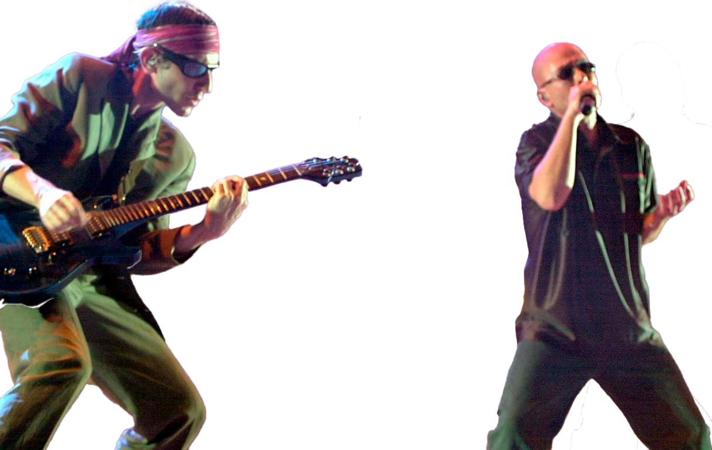
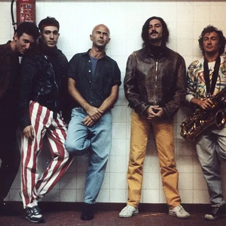
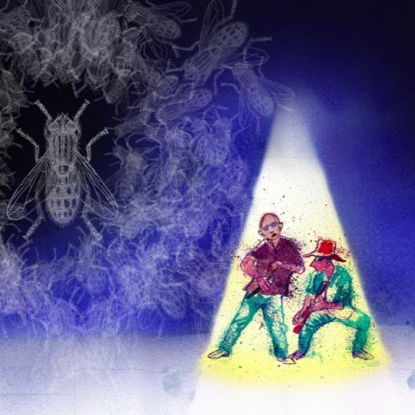
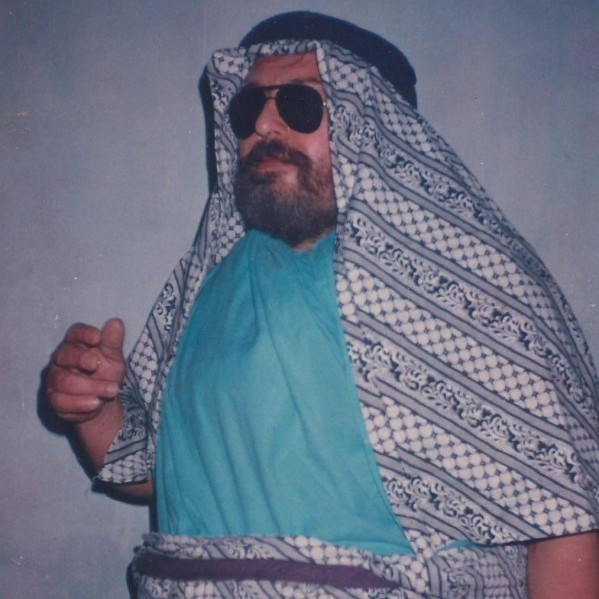
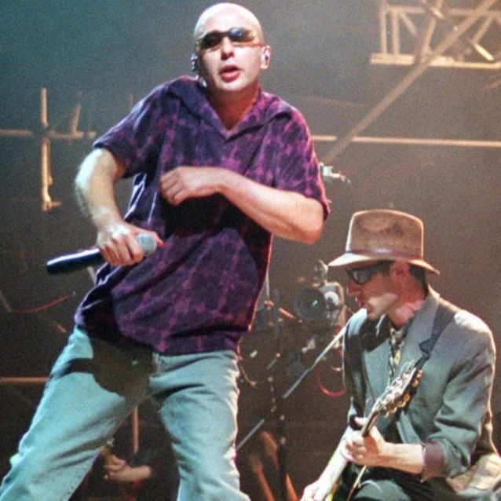
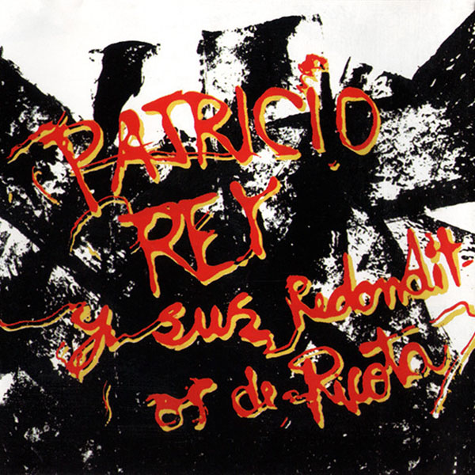
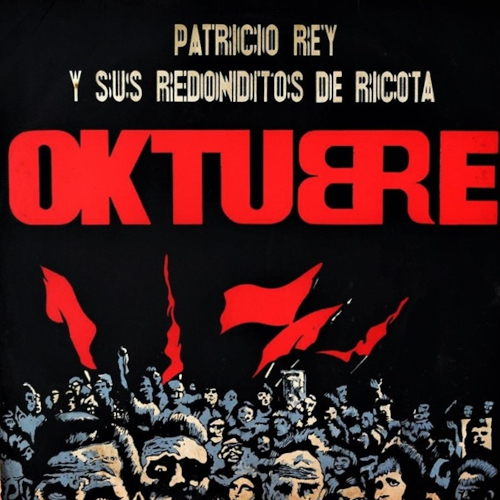
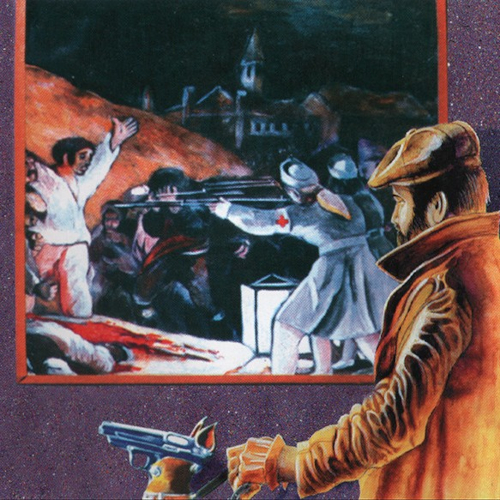

Patricio Rey
y sus redonditos de ricota

Noticias

El nacimiento de Patricio Rey
Publicado el 27 de mayo, 2025
La prehistoria de una leyenda, nacida en el under de las diagonales. El Pasaje Rodrigo, las primeras canciones y toques en bares, teatros y sótanos.

Un chancho puede comer un jamón
Publicado el 26 de mayo, 2025
1991 amaneció nublado para Los Redondos. Los fuegos de Oktubre se habían disipado y la banda del under venía de reventar Obras. Llenar el templo de la confirmación musical y afirmarse como un fenómeno de masas... .

El Sultán que cocinaba los redonditos de ricota
Publicado el 25 de mayo, 2025
Se llamaba Edgardo Gauidini, alias «el Doce» y «el Sultán«, y fue parte de los inicios de cofradía artística que fue Patricio Rey y sus Redonditos de Ricota.

La última noche de los Redondos
Publicado el 24 de mayo, 2025
Los motivos reales y profundos de la separación de Patricio Rey y sus Redonditos de Ricota, o, más específicamente, de la disolución artística de la empresa que condujeron por un cuarto de siglo....
Discos
Gulp!

Publicado el 22 de Abril de 1985
Gulp! fue grabado en 1984. La grabación tiene un aire festivo, apoyándose los temas en sólidas
melodías de guitarra y saxofón.
La portada fue realizada por Rocambole Cohen, artista muy
reconocido en La Plata, por haber sido el factótum de La Cofradía de la Flor Solar.
Oktubre

Publicado el 4 de octubre de 1986
Oktubre es el segundo álbum de estudio del grupo de rock argentino Patricio Rey y sus Redonditos
de
Ricota. Fue editado en octubre de 1986. El álbum se caracteriza por
un
sonido que incorporó influencias del new wave y el post-punk
El arte de tapa, diseñado por
el
artista plástico Rocambole, está inspirado en la Revolución rusa de 1917.
Un baión para el ojo idiota

Publicado el 9 de mayo de 1988
El tercer álbum Un baión para el ojo idiota presenta un sonido mucho más sólido, saliendo de los tonos menores y acordes atípicos, y comenzando a utilizar guitarras eléctricas distorsionadas y ritmos de batería en donde se siente un sonido de rock and roll más clásico.
Leer más¡Bang! ¡Bang! Estás liquidado

Publicado el 7 de octubre de 1989
Durante 1989 la banda se concentró en grabar en el estudio Del Cielito lo que sería el nuevo
material.
El arte de tapa es de Rocambole Cohen. Éste se inspiró en la pintura El tres de
mayo
de 1808 en Madrid de Francisco de Goya. En esta tapa, los soldados fusileros han
sido
reemplazados por miembros de la Cruz Roja.